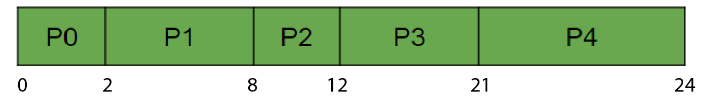

FIRST COME FIRST SERVE
FCFS (First-come-First-serve) follows the principle of FIFO (First-in-First-out). It is the simplest scheduling algorithm. FCFS simply queues processes in the order that they arrive in the ready queue. In this, the process which comes first will be executed first and the next process starts only after the previous gets fully executed. It is a non-preemptive algorithm. Let's look at this problem:

Only the processes in the ready queue are to be considered. Since there is no preemption, once the job starts it is going to run until its completion. Now let's look at the Gantt chart:

Now, let's compute each type of time using concepts and formulae, that we studied in the previous lecture. Now the chart looks like this:
So, Average waiting time = (0+1+6+9+17)/5 = 33/5
and Average turn-around time = (2+7+10+18+29)/5 = 74/5
and Average turn-around time = (2+7+10+18+29)/5 = 74/5
SHORTEST JOB FIRST (non-preemptive)
The Shortest-Job-First (SJF) or shortest job next, is a scheduling policy that selects the waiting process
with the smallest execution time to execute next. It is a non-preemptive algorithm. Being a
non-preemptive algorithm, the first process assigned to the CPU is executed till completion,
then the process whose burst time is minimum is assigned next to the CPU and hence it continues.
Let's look at the following SJF problem and understand the stepwise execution:
Now lets draw the Gantt chart to the following problem:
Therefore the final chart showing all type of times are as follows:

So, Average turn-around time = (5+11+6+17)/4 = 39/4
and Average waiting time = (0+7+3+9)/4 = 19/4
and Average waiting time = (0+7+3+9)/4 = 19/4
SHORTEST JOB FIRST (preemptive)
This is a version of Shortest job first with preemption in which the process with the smallest amount of time remaining until completion
is selected to execute. Since the currently executing process is the one with the shortest amount of time
remaining by definition, and since that time should only reduce as execution progresses, processes will
always run until they complete or a new process is added that requires a smaller amount of time.
Let's look at the following preemptive SJFS problem and understand the stepwise execution:
At first, the P0 is scheduled and it runs for 1 unit of time. P1 also around at 1 unit. So, now the remaining time of P0(i.e., 7) is compared to the burst time of P1(i.e., 4). The lesser is scheduled, here P1 is scheduled. Again it runs for 1 unit when P2 arrives. The same comparison is done. Since P1 has 3 remaining unit time which is less than P2, it is continued to be scheduled. At 3 P3 also arrives whose burst time is 5. Being more than the remaining time of P2 that is 2, P2 is continued to be scheduled until completion. Then P3 is scheduled whose burst time is 5. This runs till completion followed by P2.
All the breakdowns can be seen in the below and the Gantt chart:
Therefore the final chart showing all type of times are as follows:
So, Average turn around time = (17+4+24+7)/4 = 52/4
and Average waiting time = (9+0+15+2)/4 = 26/4
and Average waiting time = (9+0+15+2)/4 = 26/4
ROUND ROBIN
Round-Robin is a CPU scheduling algorithm where each process is assigned a fixed time slot (also called quantum). Once that chunk of time is completed, the process is context-switched with the next in the queue. It is the most common and practically usable scheduling algorithm, as it doesn't require the system to estimate the burst-time of a process. Calculation of burst-time is practically not possible as no one can predict how long a process will take to execute. It although has a minor disadvantage of the overhead of context-switching (some time gets wasted in the process). Let's try to understand the working using the following problem, with given Time Quantum of 2 units:
Each process runs for 2 unit of time, followed by the next process. The whole process runs in a circular manner.
Here is the Gantt chart of the above problem:
Here is the final chart showing all type of times:
So, Average turn around time = 3
and Average waiting time = 4.67
and Average waiting time = 4.67